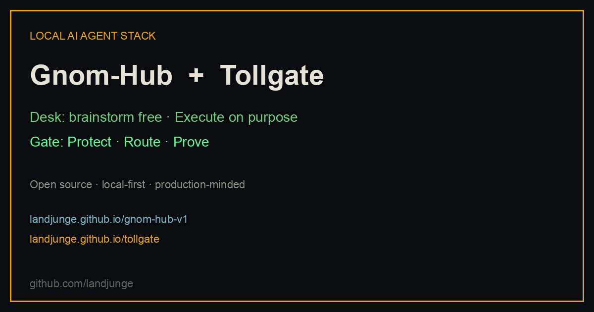

Launch post · 2026-08-11
Two tools for AI agents that should not go off the rails
If you run multi-agent work on a desk and care about cost, loops, and provider outages, these two open projects fit together: Gnom-Hub (the desk) and Tollgate (the gate).

The problem
Agent demos are easy. Production is not. Either the desk becomes a black box of runaway workers, or the LLM layer becomes an unguarded credit card. We wanted something local, honest, and boringly reliable.
1) Gnom-Hub — the desk
Gnom-Hub is a local multi-agent control hub. You brainstorm freely in chat. Workers that spend money or touch files start only when you press Execute. Visible agent cards, tools, safe computer-use (dry-run until God-Mode). No Docker.
2) Tollgate — the gate
Tollgate sits between agents and the internet: Protect · Route · Prove. Budgets and tool-loop hard stops before the call. Failover when a provider dies. Chaos tests and a reliability certificate so you can show evidence, not vibes.
- OpenAI drop-in
base_url· Anthropic · MCP · n8n - Site: landjunge.github.io/tollgate
- Repo: github.com/landjunge/tollgate
How they fit
You / n8n / agent framework
│
▼
GNOM-HUB desk brainstorm → Execute
│
▼
TOLLGATE Protect · Route · Prove
│
OpenAI / Zen / DeepSeek / tools
Try Tollgate in 10 minutes
Protect demo needs no API keys.
git clone https://github.com/landjunge/tollgate.git && cd tollgate python3 -m venv .venv && .venv/bin/pip install -e . ./scripts/ten-minute.sh # → blocked tool-loop + certificate scorecard # Dashboard: http://127.0.0.1:8787/dashboard
Share
Ready-made posts: SOCIAL_POSTS.md
Ecosystem: ecosystem page
Gist: public gist
Feedback on the cold path is more valuable than feature requests. If something is confusing in the first 10 minutes — that is the bug.